Ino, Kochi: things to do, food and stays
Ino · Kochi
Ino
Highlighted on the Kochi map.
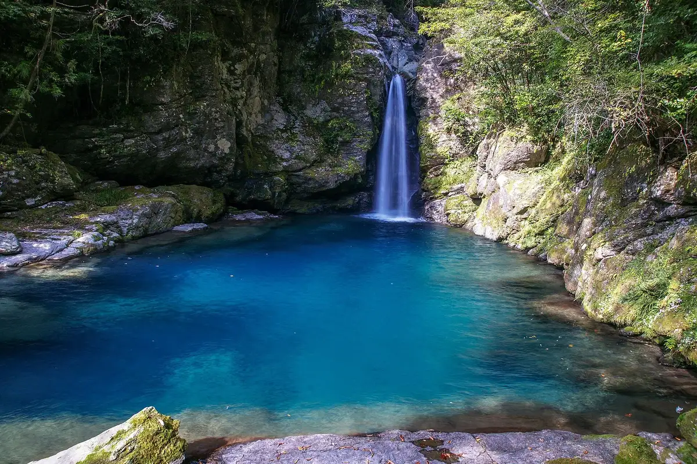
Stay
土佐和紙工芸村くらうど
Tosa Washi Kogei Mura Kuraudo
VILLA MOITOS NIYODO
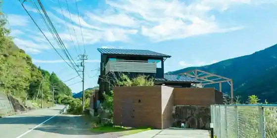
VILLA MOITOS NIYODO
亀の井ホテル 高知
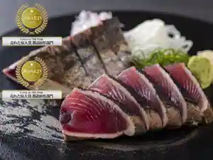
Kame No I Hotel Kochi
木の香温泉
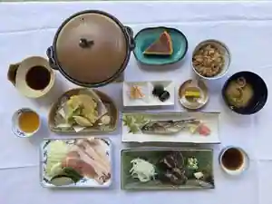
Ki No Kaori Onsen
Inn at Kinokaori Onsen in Kuwase, Ino.
Dining
手打そば 時屋
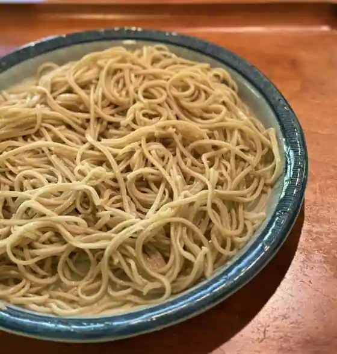
Teuchi Soba Toki Ya
高知アイス売店
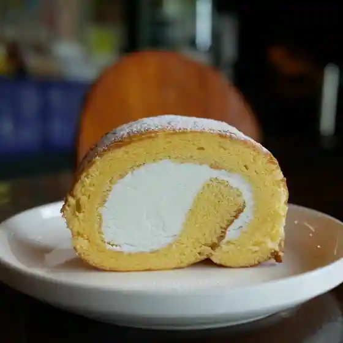
Kochi Aisu Bai
畑山ガーデン
Hatakeyama Garden
自由軒 伊野出来地店
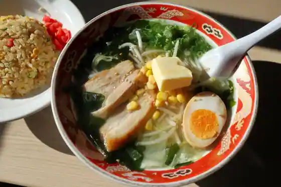
Jiyu Ken Ino Deki Chi
宮本鮮魚店
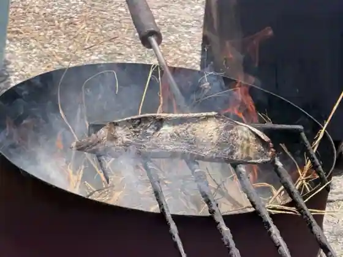
Miyamoto Sengyo
道の駅 木の香
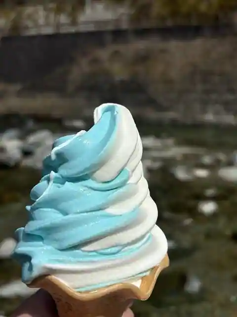
Michi No Eki Ki No Kaori
633美の里
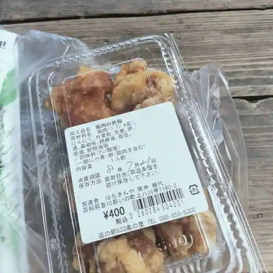
633 Bi No Sato
QRAUD
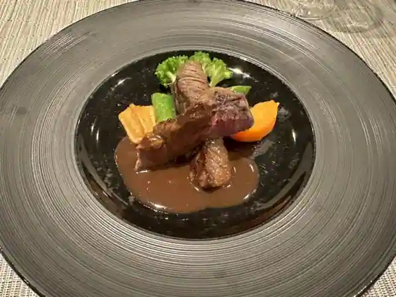
QRAUD
水辺の駅 あいの里 仁淀川 食堂
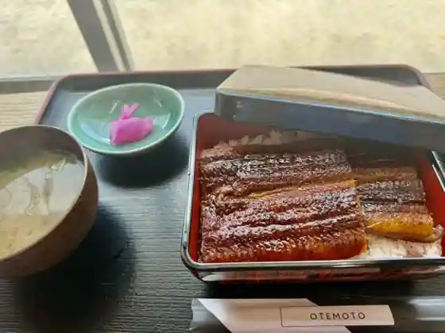
Suihen No Eki Aino Sato Niyodogawa Shokudo
道の駅土佐和紙工芸村
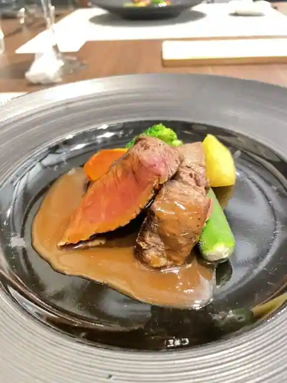
Michi No Eki Tosa Washi Kogei Mura
仁淀川を眺めながらのお食事あおぎ
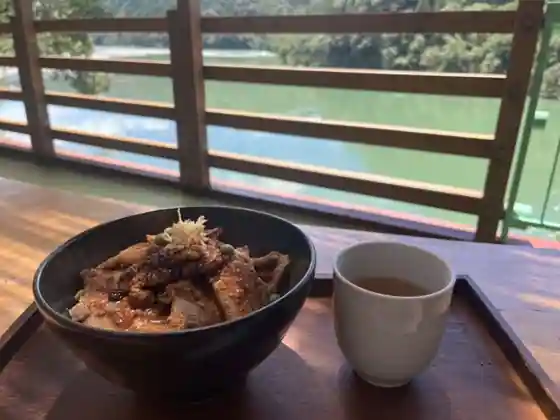
Niyodogawa Wo Nagame Nagarano Shokuji Aogi
シラサ
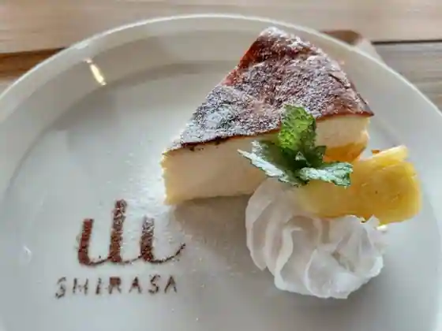
Shirasa
くらうど ナチュラルテイストダイニング
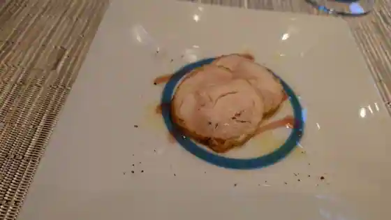
Kuraudo Nachuraruteisuto Dining
食事処 はちきんや
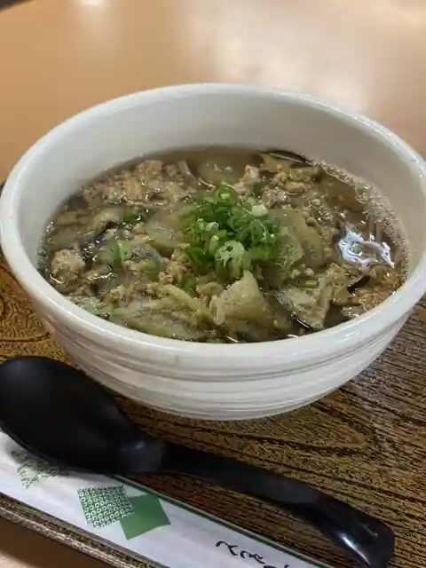
Shokuji Tokoro Hachikinya
山と川
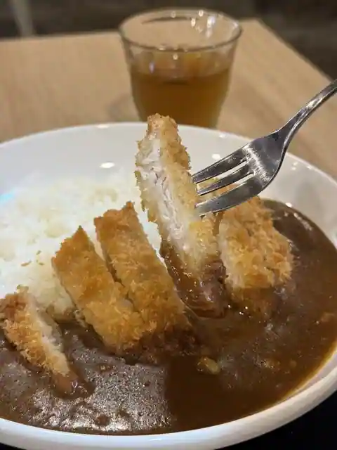
Yama To Kawa
ごはん処 山屋紅
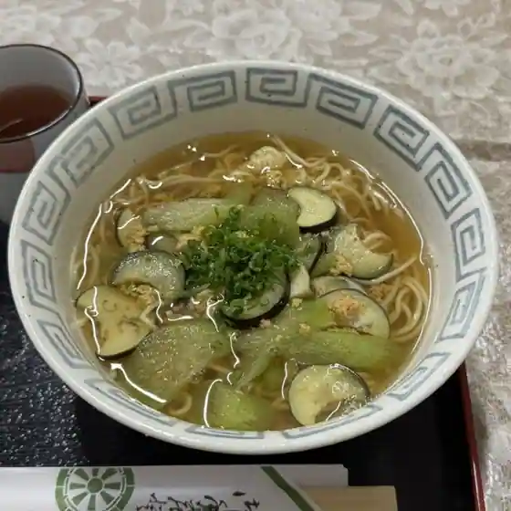
Gohan Tokoro Yamaya Kurenai
美味しんぼ山岡
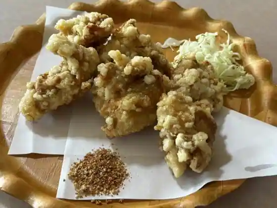
Oishinbo Yamaoka
とんかつ芳松
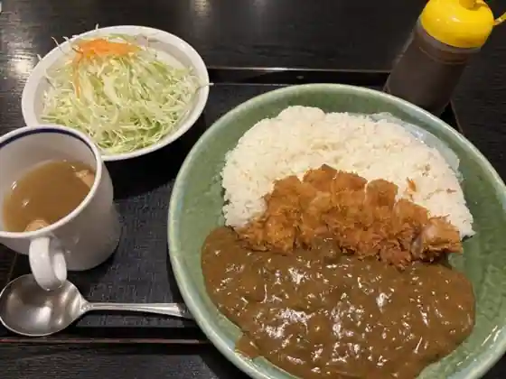
Tonkatsu Yoshimatsu
回転寿司 寿し一貫 いの店
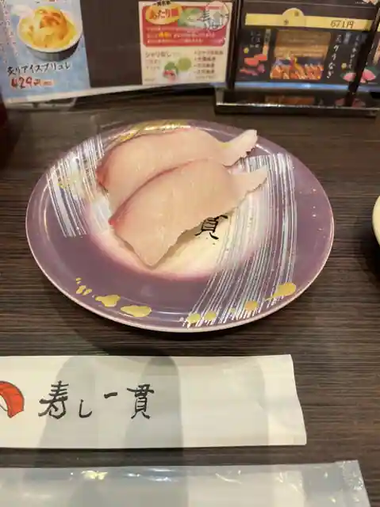
Kaitenzushi Hisashi Shi Ikkan Ino
ごはん家いの
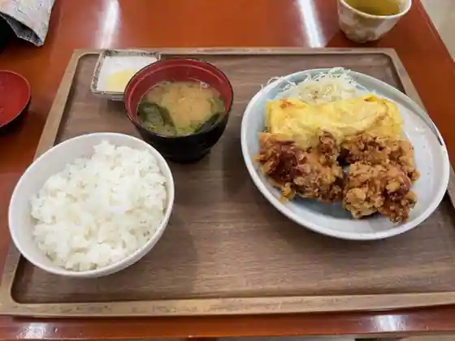
Gohan Ie Ino
喫茶七彩館
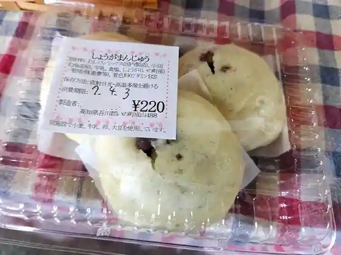
Kissa Shichisai Kan
ツリーハウスカフェ Perch
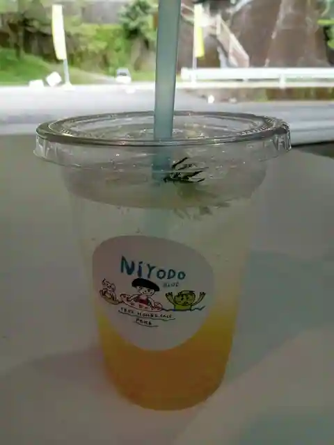
Tsuri House Cafe Perch
Sights
Niko Fuchi
Ino Kami no Museum
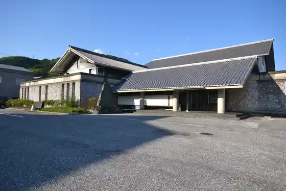
Ino Eki
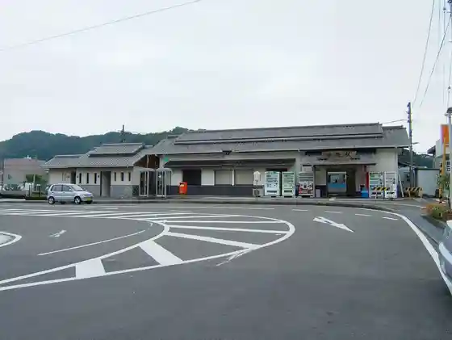
Nagoya Ya Chinkakyo
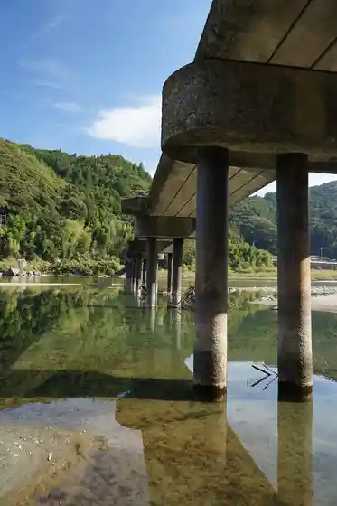
Ino Teiryujo
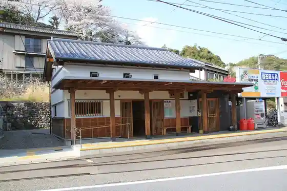
Kami no Ko Ino Bori